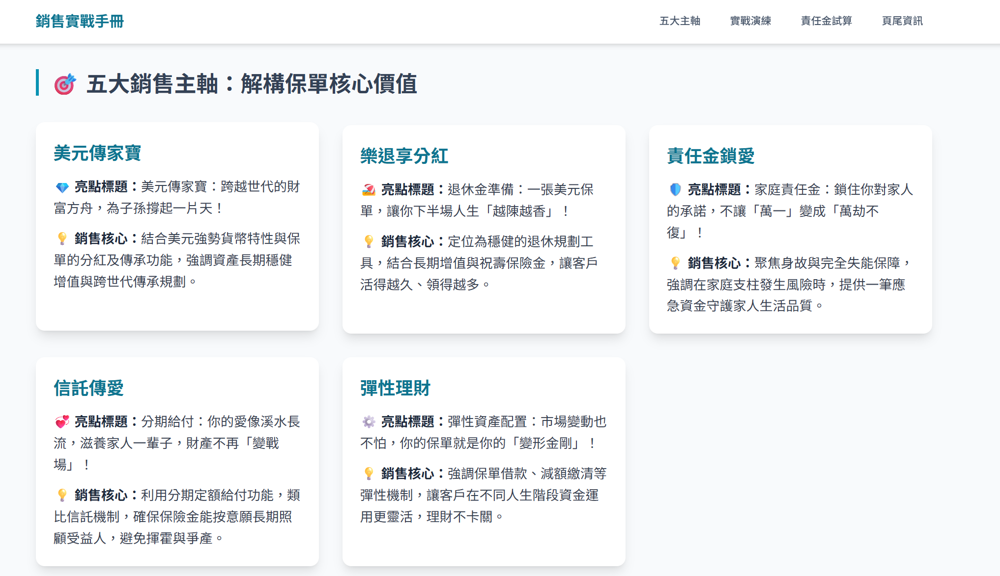
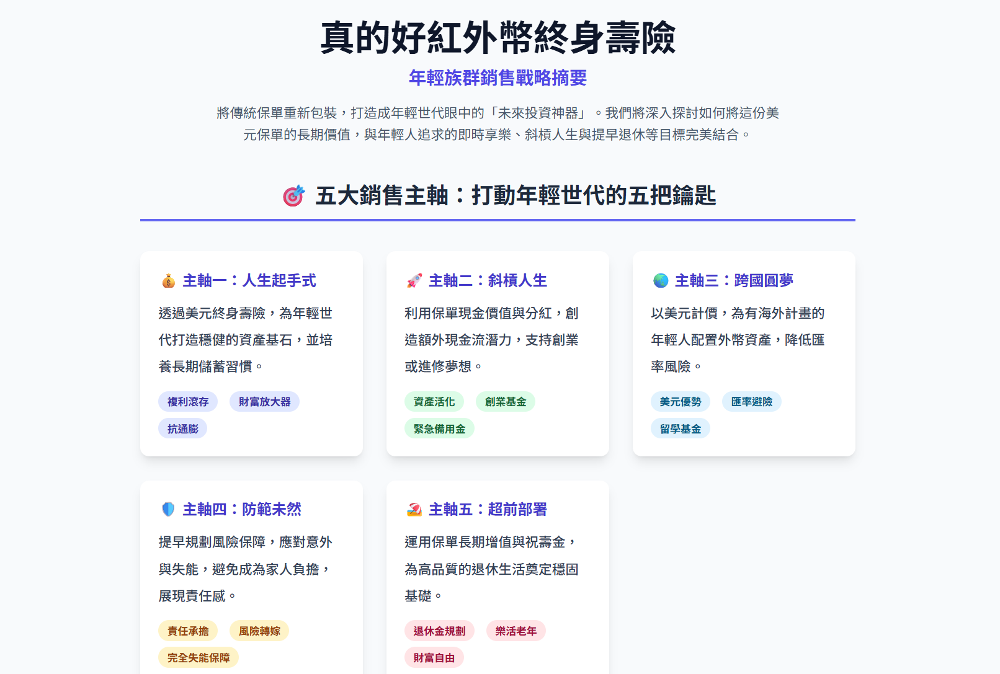
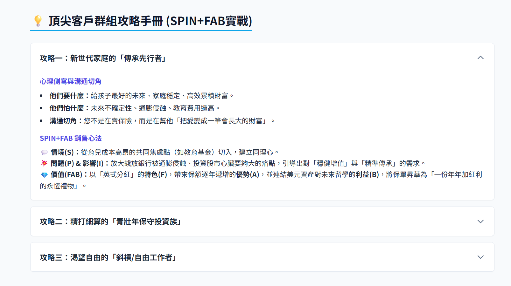

1. 複雜的保單
看似複雜的表單，如何在 1-3 分鐘內容快速轉換成業務得力的武器？
以「QQ人壽 真的好紅 外幣終身壽險定額給付型」-條款為例：
查看條款範例
善用奇點智匯
快速讓保單條款變成銷售手冊，2分鐘搞定10種以上銷售手冊！
2. 互動網頁
將複雜的保單內容轉化為視覺化、易於操作的網頁。使用者可以透過點擊、篩選與計算，直觀地理解保障範圍與權益，提升參與感與透明度。

保險銷售手冊AI網頁
秒懂保單大局觀，業績起飛！
AI為您剖析保單，提煉黃金賣點，搭配實戰話術，讓您面對客戶時，字字珠璣，輕鬆成交！

年輕族群銷售戰略AI網頁
攻佔Z世代心房的秘密武器！
深入年輕人關注的議題，提供量身打造的銷售劇本，讓您不再是賣保險，而是他們的人生規劃師。

不同年齡層攻略AI網頁
客戶分層，精準打擊！
從社會新鮮人到家庭支柱，AI提供細膩的族群洞察與溝通模板，讓您的每一句話都說到客戶心坎裡。
3. 業務手冊
提煉互動網頁中的核心賣點與客戶常見問題，整合成一本結構化、系統化的銷售指南。為業務團隊提供標準化的話術、策略與應對方案，強化專業形象。
保險銷售手冊AI文檔
轉化複雜條款為成交利器！
將保單轉為結構清晰的銷售文檔，詳列關鍵賣點、客戶問答與專業話術，讓您從容應對提問，把握每個成交機會。
年輕族群銷售戰略AI文檔
成為Z世代信賴的財務夥伴！
此文檔剖析Z世代價值觀，提供針對性溝通策略。詳盡腳本與案例助您建立深度連結，讓成交水到渠成。
不同年齡層攻略AI文檔
您的客戶分層擊破寶典！
手冊詳列各年齡層的財務痛點與保障缺口。透過精準的數據洞察與情境模擬，讓您的每次推薦都正中要害，顯著提升成交率。
4. Podcast
將業務手冊中的精華內容，以對談、故事或案例分享的形式錄製成音頻節目。這不僅擴大了觸及範圍，也讓聽眾能在通勤、運動等碎片化時間中，輕鬆吸收知識。
保險銷售手冊AI音檔
隨時隨地，聲入人心。
將銷售策略化為動聽音檔，無論在何處，都能輕鬆學習，讓專業知識與銷售技巧內化於心。
年輕族群銷售戰略AI音檔
用聲音，和Z世代同頻共振。
透過新潮的音頻內容，傳遞符合年輕族群的價值觀與生活態度，讓他們在聆聽中感受您的專業與溫度。
不同年齡層攻略AI音檔
聲動策略，層層擊破。
針對不同年齡客戶的音頻攻略，讓您在開車或休息時也能精進銷售戰術，隨時準備好迎接下一次挑戰。